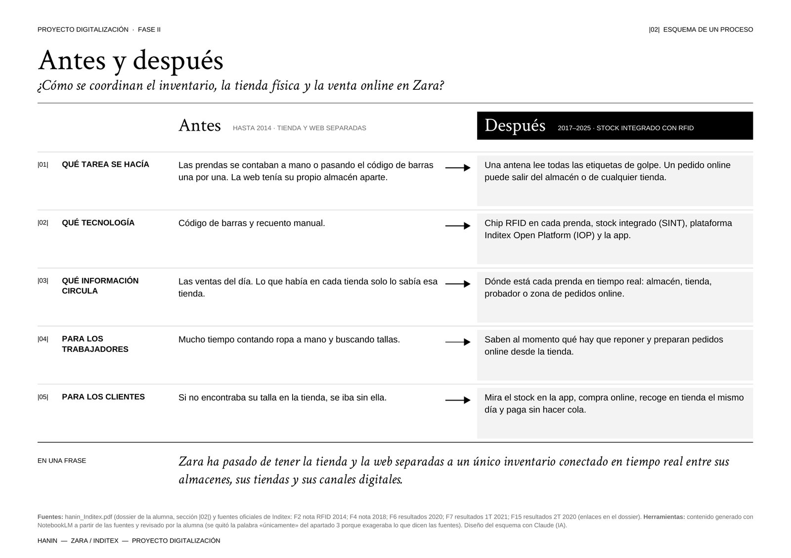
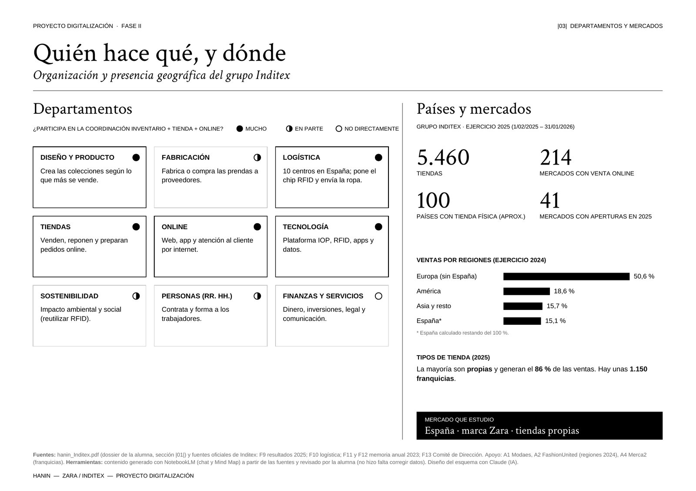
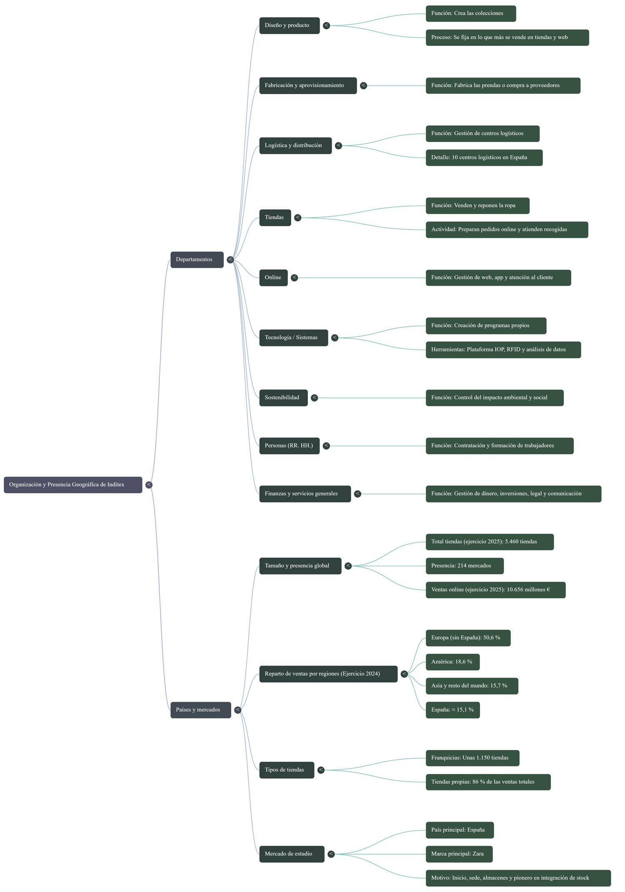

Diseño y producto
Crea las colecciones según lo que más se vende.
Proceso
Mi pregunta es cómo se coordinan el inventario, la tienda física y la venta online. Para verlo claro, comparo cómo se hacían las cosas antes del RFID y cómo se hacen ahora.

Cada prenda recibe su chip RFID y sale hacia las tiendas o hacia los clientes.
El sistema SINT y la plataforma IOP saben en tiempo real dónde está cada prenda.
El cliente ve el stock, compra donde quiere y recoge o recibe su pedido.
| Aspecto | Antes, hasta 2014 | Después, 2017–2025 |
|---|---|---|
| Qué tarea se hacía | Las prendas se contaban a mano o pasando el código de barras una por una. La web tenía su propio almacén aparte. | Una antena lee todas las etiquetas de golpe. Un pedido online puede salir del almacén o de cualquier tienda. |
| Qué tecnología | Código de barras y recuento manual. | Chip RFID en cada prenda, stock integrado (SINT), plataforma IOP y la app. |
| Qué información circula | Las ventas del día. Lo que había en cada tienda solo lo sabía esa tienda. | Dónde está cada prenda en tiempo real: almacén, tienda, probador o zona de pedidos online. |
| Para los trabajadores | Mucho tiempo contando ropa a mano y buscando tallas. | Saben al momento qué reponer y preparan pedidos online desde la tienda. |
| Para los clientes | Si no encontraba su talla en la tienda, se iba sin ella. | Mira el stock en la app, compra online, recoge el mismo día y paga sin hacer cola. |
Zara ha pasado de tener la tienda y la web separadas a un único inventario conectado en tiempo real.
Inditex no publica un organigrama completo. Juntando su memoria anual y sus notas de prensa he identificado estas áreas. Las que llevan un punto azul son las que más participan en mi proceso. [F11] [F12] [F13]
Crea las colecciones según lo que más se vende.
Fabrica o compra las prendas a proveedores.
Diez centros en España. Pone el chip RFID y envía la ropa.
Venden, reponen y preparan pedidos online.
Web, app y atención al cliente por internet.
La plataforma IOP, el RFID, las apps y los datos.
Impacto ambiental y social, como reutilizar el RFID.
Contrata y forma a los trabajadores.
Dinero, inversiones, legal y comunicación.
5.460
tiendas en 2025
214
mercados con venta online
41
mercados con aperturas en 2025
86 %
de las ventas, en tiendas propias
Datos del grupo Inditex, ejercicio 2025 (de febrero de 2025 a enero de 2026). Hay unas 1.150 franquicias. [F9] [A1] [A4]
El dato de España lo calculé restando del 100 %. [A2]
El mercado que estudio: España, marca Zara, tiendas propias.



El contenido lo generó NotebookLM a partir de mi dossier y de fuentes oficiales de Inditex, y lo revisé yo. Los dos primeros esquemas los diseñé con Claude (IA).